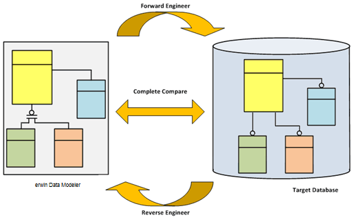

This section contains the following topics
The Application Development Cycle
erwin Data Modeler (erwin DM) provides the tools to design and implement databases for transactional business, E-commerce, and data warehousing applications. You can create and maintain graphical models that represent databases, data warehouses, and enterprise data models. You can also define, manage, and implement corporate data requirements on several databases.
erwin DM includes a Windows-based graphical user interface, entity-relationship (ER) diagramming tools, custom editors, and a Model Explorer. The tools and editors help you define physical database objects and the Model Explorer provides a text-based view of model objects.
You can also use erwin DM to streamline the application development process. Data Architects, Business Analysts, Data Modelers, and so on, can work independently on different parts of a model or different model types. The groups can collaborate and synchronize their work as well.
erwin DM lets you create and maintain your relational database and the logical and physical models that describe it. erwin DM works by providing a design solution that helps you create a visual blueprint (a data model) for your organization.
erwin DM helps you design a logical data model to capture business rules and requirements. The application also supports designing or deriving a corresponding physical data model for your target server. You can then forward engineer the physical data model and automatically generate the physical database structures to your system catalog.
erwin DM supports reverse engineering of existing databases and provides both a physical and a logical/physical data model. The forwarding engineering and reverse engineering options help you maintain an existing database, or migrate from your current database to a different one.
The Complete Compare feature automates the model and database synchronization by letting you compare the model with the database, displaying, and analyzing the differences. The comparison result enables you to move selected differences into the model or generate them into the database.
